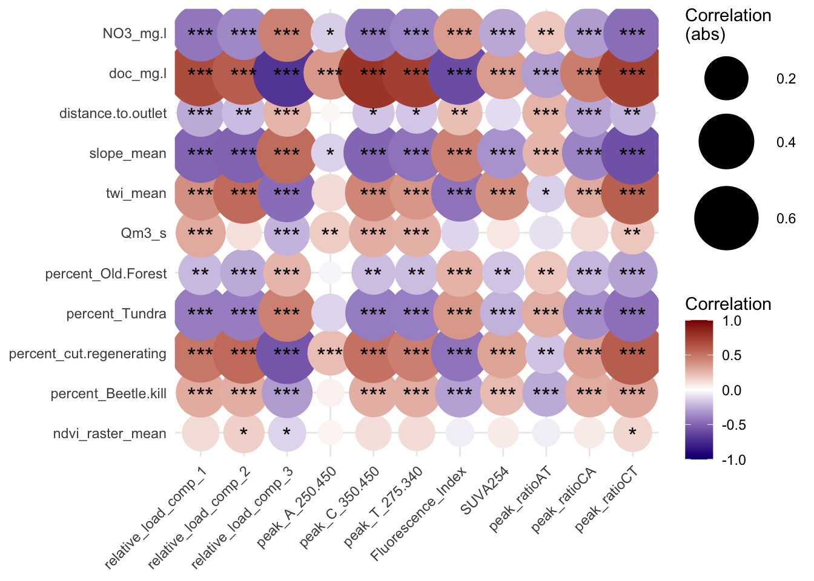

4.1 MODEL 1: include a flow stage classifier as a latent variable.
To include classifications in a PLS model, we generate a column in the dataset for each classificaiton, and a binomial indicators in each row. For example, of the stream stage at the time of sampling is just after peak flow, that sample will have a ‘1’ in the upper descending limb column, and a ‘0’ in all others. Potential classifications are ‘rising limb’, ‘upper descending limb’, ‘lower descending limb’ and baseflow. These classificaitons were developed by finding the date of peak flow for the respective year and stream, and the dates for the end and beginning of baseflow for each calendar year. Then the ‘midway’ point between peakflow and the first date of baseflow delineates upper and lower descending limbs. (find the name of this script, pretty sure its an .ipynb) Build the outer model or ‘constructs’ or latent variables
simple_FEF_mm <- constructs(
composite("TOPO", multi_items("topo_", 1:3)),
composite("HYDRO", single_item("hydro_1")),# multi_items("hydro_", 1:2)),,
composite("LANDCOVER", multi_items("landcover_", 1:2)),
composite("DOC", single_item('doc_1')),
composite("FLOW_STAGE", multi_items("flow_stage_", 1:4))
)Now for the structural model:
# Create structural model
simple_FEF_sm <- relationships(
paths(from = c("TOPO"), to = c("HYDRO", "LANDCOVER", "DOC")),
paths(from = c("LANDCOVER"), to = c("HYDRO", "DOC")),
paths(from = c("HYDRO"), to = c("DOC")),
paths(from = c("FLOW_STAGE"), to = c("HYDRO", "DOC"))
)
# Note that neither a dataset nor a measurement model is specified in the structural model stage, so we can reuse the structural model object simple_sm across different datasets and measurement models.Model Estimation using the PLS-SEM algorithm. See demo for more info.
and output summary model_1 includes flow stage
A plot of result reliability measures:
